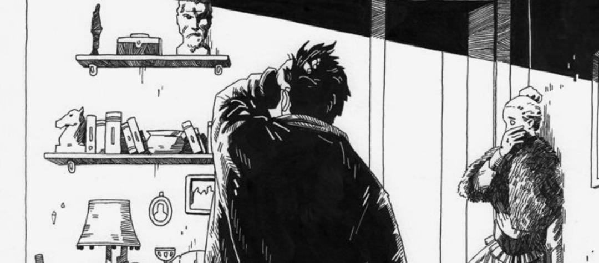

El mal menor por un bien mayor

El protagonista, Raskólnikov, es un joven estudiante empobrecido en San Petersburgo que comete un asesinato: mata a una vieja prestamista con la justificación de que ella es "inútil y cruel" y que su dinero podría servir para hacer el bien a muchas personas.
Él se convence de que eliminarla es un mal menor en comparación con el bien mayor que puede lograr con los recursos obtenidos. Incluso llega a pensar que los grandes hombres de la historia también han quebrado leyes morales por causas superiores.
Sin embargo, tras cometer el crimen, Raskólnikov entra en una profunda crisis psicológica y moral, lo que pone en duda toda su justificación inicial.
Utilitarismo y consecuencialismo
Tu respuesta se alinea con la perspectiva utilitarista, que evalúa las acciones por sus consecuencias y no por su naturaleza intrínseca. Sin embargo, la novela muestra cómo esta filosofía falla a Raskólnikov:
1. El protagonista no logra el "bien mayor" que pretendía
2. La tortura psicológica que experimenta sugiere que hay una ley moral interior que no puede ser ignorada
3. Dostoyevski cuestiona la capacidad humana para calcular correctamente las consecuencias de nuestros actos
La novela invita a reflexionar: ¿quién puede realmente juzgar qué es un "bien mayor" y con qué autoridad decidimos quién debe sacrificarse por ese bien?
La ética del deber y los valores absolutos
Tu respuesta refleja una postura deontológica (basada en principios), similar a la ética kantiana que considera que hay actos moralmente incorrectos en sí mismos, independientemente de sus consecuencias.
Dostoyevski parece inclinarse hacia esta visión, mostrando que:
1. El asesinato destruye psicológicamente a Raskólnikov, sugiriendo una ley moral natural
2. La redención sólo llega con el reconocimiento de su culpa y la aceptación del castigo
3. El personaje de Sonia representa cómo la moral y la compasión son valores absolutos, no negociables
Esta perspectiva plantea que hay líneas que no deben cruzarse, sin importar las justificaciones racionales que podamos elaborar.
La complejidad moral y la humildad epistémica
Tu respuesta sugiere una postura matizada que reconoce la complejidad de los juicios morales. Esta perspectiva es particularmente interesante porque:
1. Reconoce la falibilidad humana para predecir consecuencias, un tema central en la novela
2. Considera tanto los principios como las consecuencias, similar a la ética de la virtud aristotélica
3. Refleja la evolución de Raskólnikov, quien pasa de una teoría abstracta a enfrentar la realidad concreta
Dostoyevski parece alertar sobre el peligro de las ideologías absolutas, sugiriendo que la sabiduría moral requiere humildad ante la complejidad de la vida humana y sus dilemas.
Autenticidad y transformación
Raskólnikov es un joven estudiante que vive en la pobreza en San Petersburgo. A lo largo de la novela, lucha internamente con una teoría que ha desarrollado: que ciertas personas extraordinarias tienen derecho a cometer crímenes si es por un bien mayor. Para probar esta idea, asesina a una vieja prestamista.
La autenticidad se manifiesta en su conflicto entre su ideología racional y su conciencia moral. Intenta actuar como un "hombre extraordinario", pero su auténtico yo —humano, vulnerable y con principios— lo traiciona constantemente.
La novela muestra cómo su lucha por ser fiel a una visión irreal de sí mismo lo lleva al sufrimiento, y solo al final, cuando reconoce su humanidad y se rinde al amor y al castigo, se reconcilia con su yo auténtico.
La autenticidad como reconocimiento del verdadero yo
Esta interpretación sugiere que la teoría del "hombre extraordinario" era una máscara que Raskólnikov usaba para escapar de su verdadera naturaleza. Su transformación final representa entonces:
1. El reconocimiento de su humanidad compartida con otros, no su excepcionalidad
2. La aceptación de su conciencia moral como parte integral de su identidad
3. La capacidad de amar y sentir compasión como su auténtica forma de ser
Dostoyevski parece sugerir que la verdadera autenticidad no consiste en la afirmación egoísta del yo contra la sociedad, sino en el reconocimiento de nuestra naturaleza moral compartida.
La crítica existencialista a la moral convencional
Esta perspectiva, más cercana a lecturas existencialistas o nietzscheanas, ve la transformación de Raskólnikov como una derrota de su individualidad:
1. Su aceptación del castigo representa la sumisión a las normas sociales convencionales
2. Abandona su búsqueda de una moral personal más allá del bien y del mal tradicionales
3. Se somete a la influencia de Sonia, renunciando a su autonomía moral
Sin embargo, la novela cuestiona si esta forma de individualismo es realmente viable o deseable, mostrando el aislamiento y sufrimiento que produce en Raskólnikov.
La dialéctica entre individuo y comunidad
Esta interpretación ve la transformación de Raskólnikov como una resolución dialéctica que supera la oposición entre individualismo y convencionalismo:
1. Raskólnikov no renuncia a su individualidad, sino que la redefine en relación con los demás
2. Reconoce que la verdadera libertad no está en la transgresión, sino en la responsabilidad moral
3. Descubre que la autenticidad incluye reconocer nuestra interdependencia con los demás
Dostoyevski parece sugerir que la auténtica individualidad no se desarrolla contra la comunidad, sino en diálogo con ella, y que aceptar la responsabilidad moral es parte de la maduración personal.
La vida bien lograda

En la novela, Raskólnikov cree que una vida bien lograda es aquella en la que se trasciende la mediocridad, se actúa con voluntad propia y se tiene impacto en el mundo, incluso si eso implica romper las reglas morales. Su idea está influida por teorías filosóficas como el utilitarismo y el superhombre de Nietzsche (aunque Dostoyevski lo anticipa).
Por otro lado, Sonia, que vive en la miseria y se sacrifica por su familia, representa una vida bien lograda desde la perspectiva cristiana: una existencia guiada por el amor, la fe, la compasión y el sufrimiento redentor.
Así, la novela contrapone dos visiones: la vida basada en el poder y la racionalidad vs. la vida basada en el amor y el sacrificio.
La visión cristiana de Dostoyevski
Esta interpretación, muy alineada con la propia fe cristiana ortodoxa de Dostoyevski, ve el desenlace de la novela como la afirmación de que:
1. La redención de Raskólnikov viene a través del amor de Sonia y su capacidad de sacrificio
2. El sufrimiento, cuando es compartido y aceptado, tiene valor transformador y redentor
3. La vida bien lograda no se mide por el éxito individual, sino por la capacidad de amar y conectar con los demás
La transformación final de Raskólnikov sugiere que Dostoyevski ve en el amor cristiano, y no en el poder nietzscheano, el verdadero camino hacia una vida significativa y auténtica.
La persistencia del ideal heroico
Esta lectura, menos convencional pero defendible, sugiere que Dostoyevski no abandona completamente el ideal de grandeza individual:
1. Raskólnikov no renuncia a su excepcionalidad, sino que la redefine
2. Su sufrimiento y posterior redención lo confirman como alguien extraordinario, no común
3. La novela puede leerse como una crítica no al ideal de grandeza, sino a los medios elegidos para alcanzarla
Esta interpretación ve a Dostoyevski no como un simple defensor del conformismo cristiano, sino como alguien que busca un camino alternativo hacia la grandeza individual, compatible con la moral.
La dialéctica entre individualidad y comunidad
Esta lectura ve la novela como una síntesis que trasciende la oposición entre individualismo y comunitarismo:
1. Dostoyevski valora tanto la aspiración individual a la grandeza como la capacidad humana de amar
2. Critica tanto el individualismo extremo como el conformismo social vacío
3. Propone una vida bien lograda donde la individualidad se realiza en comunión con los demás
Según esta visión, la novela no ofrece una solución simplista sino que invita a cada lector a encontrar su propio equilibrio entre la afirmación de su individualidad y su conexión con la humanidad compartida.
El principio de la máxima felicidad

Anna Fitzgerald es una niña concebida por medio de fertilización in vitro con el propósito de ser genéticamente compatible con su hermana mayor Kate, quien sufre de leucemia. Desde pequeña, Anna ha sido sometida a múltiples intervenciones médicas (extracción de células madre, transfusiones, etc.) para mantener viva a Kate.
Cuando Kate necesita un trasplante de riñón, Anna toma una decisión inesperada: demanda a sus propios padres para obtener la emancipación médica, es decir, el derecho a decidir sobre su propio cuerpo y no verse obligada a donar su riñón.
Este dilema familiar expone un profundo conflicto ético entre el amor, el deber y el derecho a la autonomía personal.
El utilitarismo y el bien común
Esta perspectiva refleja el principio utilitarista de la máxima felicidad o del mayor bien para el mayor número:
1. El sacrificio de Anna produciría un beneficio mayor (salvar la vida de Kate y evitar el sufrimiento familiar)
2. El valor del bienestar colectivo supera los derechos individuales en situaciones extremas
3. Los lazos familiares implican obligaciones morales especiales que justifican ciertos sacrificios
Sin embargo, esta postura plantea interrogantes sobre quién tiene derecho a decidir cuándo el bien común justifica la restricción de libertades individuales y hasta qué punto puede exigirse el sacrificio a alguien.
La autonomía personal y los derechos inalienables
Esta perspectiva defiende una postura basada en derechos fundamentales:
1. Cada persona es dueña de su propio cuerpo y tiene derecho a decidir sobre él
2. Instrumentalizar a una persona (crear a Anna para salvar a Kate) viola el principio kantiano de tratar a las personas como fines y no como medios
3. Los derechos no pueden sacrificarse en nombre de consecuencias benéficas
Esta posición cuestiona si es ético concebir un hijo con el propósito específico de salvar a otro, y defiende que incluso con fines nobles, hay límites morales que no deben cruzarse.
Ética contextual y autonomía relacional
Esta posición matizada reconoce la complejidad del caso:
1. La autonomía se desarrolla en contextos de relaciones y no de forma aislada
2. El consentimiento genuino y voluntario es clave: un sacrificio elegido libremente es diferente de uno impuesto
3. La edad y madurez de Anna influyen en su capacidad para tomar decisiones completamente autónomas
Esta perspectiva sugiere que las decisiones morales deben considerar tanto los principios como el contexto específico, y que la autonomía personal existe en tensión con nuestras responsabilidades hacia los demás.
El mal menor en The Dark Knight

En la película The Dark Knight, el Joker, un villano anárquico, presenta a Batman y a las autoridades de Gotham un dilema moral: ha colocado explosivos en dos barcos, uno con civiles y otro con prisioneros. Les da a ambos grupos un detonador que supuestamente puede volar el otro barco. Si ninguno actúa, ambos barcos explotarán a la medianoche.
Batman, mientras tanto, también enfrenta otro dilema: torturar o violentar los derechos de personas para obtener información que podría salvar vidas. A lo largo de la película, él y otros personajes deben decidir entre dos males, buscando el "mal menor".
La ética consecuencialista
Esta posición, alineada con el utilitarismo, evalúa la moralidad de los actos por sus resultados:
1. En situaciones extremas, se justifica causar un daño menor para evitar uno mayor
2. La responsabilidad moral incluye considerar las consecuencias de la inacción
3. La perfección moral es imposible en un mundo imperfecto; debemos elegir el menor de los males
Sin embargo, la película parece cuestionar esta lógica, mostrando cómo el cálculo utilitario puede conducir a una pendiente resbaladiza donde cada vez se justifican actos más cuestionables en nombre del "bien mayor".
La ética deontológica
Esta posición, inspirada en Kant, sostiene que ciertas acciones son intrínsecamente incorrectas:
1. La tortura, el asesinato o la violación de derechos fundamentales son moralmente incorrectos por su naturaleza
2. Usar a personas como medios (sacrificar a unos por otros) viola la dignidad humana
3. Cruzar ciertos límites morales corrompe al individuo y a la sociedad a largo plazo
Batman parece inclinarse hacia esta visión cuando rechaza matar al Joker a pesar de las consecuencias, manteniendo su código moral como una línea que no cruzará.
La ética de la virtud y el carácter moral
Esta posición más matizada sugiere que la moralidad no se reduce a reglas absolutas ni a cálculos de consecuencias:
1. Lo que importa es el carácter y las intenciones de quien actúa
2. Cada situación requiere un juicio prudencial que considere el contexto específico
3. Las virtudes como la compasión, la justicia y la integridad deben guiar nuestras decisiones
The Dark Knight explora esta complejidad mostrando cómo diferentes personajes (Batman, Gordon, Dent) responden de manera distinta ante dilemas similares, revelando su verdadero carácter moral.
Relativismo cultural en Los Juegos del Hambre

En "Los Juegos del Hambre", Panem es un país dividido en 12 distritos controlados por el Capitolio. Como castigo por una rebelión pasada, cada año un niño y una niña de cada distrito son seleccionados para participar en los Juegos del Hambre, donde deben luchar a muerte hasta que solo quede uno.
Mientras que en los distritos pobres los juegos son vistos como una barbarie forzada, en el Capitolio son considerados un entretenimiento sofisticado, un espectáculo glamuroso al que el público asiste con entusiasmo.
La protagonista, Katniss Everdeen, se ofrece como voluntaria para reemplazar a su hermana pequeña y comienza a cuestionar este sistema y sus reglas.
El relativismo cultural y la tolerancia
Esta perspectiva destaca la importancia de no juzgar otras culturas desde nuestros propios valores:
1. Las prácticas culturales solo pueden entenderse dentro de su propio contexto
2. No existe una posición neutral desde la cual juzgar otras culturas
3. La imposición de valores "universales" puede ser una forma de imperialismo cultural
Sin embargo, la novela parece cuestionar esta postura al mostrar cómo el relativismo puede servir para justificar la opresión y la deshumanización, como ocurre con los ciudadanos del Capitolio que normalizan la muerte de niños como entretenimiento.
El universalismo moral y los derechos humanos
Esta perspectiva defiende la existencia de valores morales universales:
1. Ciertas prácticas (como matar niños por entretenimiento) son incorrectas independientemente del contexto cultural
2. La dignidad humana y el derecho a la vida son valores universales que trascienden culturas
3. El relativismo extremo puede paralizar nuestra capacidad de juicio moral y resistencia a la opresión
La rebelión de Katniss sugiere que Collins simpatiza con esta visión, mostrando que incluso en un mundo donde los Juegos son "normales", existe una intuición moral que los reconoce como injustos.
Pluralismo crítico
Esta posición intermedia busca un equilibrio entre comprender contextos culturales y mantener principios fundamentales:
1. Debemos intentar comprender prácticas culturales en su contexto histórico y social
2. La comprensión no implica aprobación ni impide la crítica moral
3. El diálogo intercultural puede ayudar a expandir nuestra visión moral
"Los Juegos del Hambre" ilustra este dilema: la obra nos invita a entender cómo una sociedad puede normalizar la violencia, pero simultáneamente nos pide que reconozcamos su fundamental injusticia y la necesidad de resistencia.